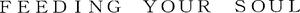

Trade Mark Journal No.2025/028 11 July 2025
WO0000001850948 (8,21)
Office of origin: Japan
Date of International Registration:5 March 2025
Date of designation in the UK:
5 March 2025

International priority date claimed: 24 October 2024
(Japan)
- Class 8
- Tweezers; edge tools [hand tools]; hand-operated implements; egg slicers, non-electric; non-electric planes for flaking dried bonito blocks [Katsuo-bushi planes]; can openers, non-electric; spoons; cheese slicers, non-electric; pizza cutters, non-electric; forks [cutlery]; ice axes; diving knives; diving knife holders; palette knives.
- Class 21
- Cosmetic utensils; cooking pots and pans, non-electric; coffee-makers, non-electric; Japanese cast iron kettles, non-electric [Tetsubin]; kettles, non-electric; dinnerware, other than knives, forks and spoons; cookware; ice pails; sugar tongs; nutcrackers; pepper pots; sugar bowls; colanders; salt shakers; Japanese style cooked rice scoops [Shamoji]; cooking funnels; drinking straws; Japanese style personal dining trays or stands [Zen]; bottle openers, non-electric; egg cups; tart scoops; napkin holders; napkin rings; hot pads [trivets]; chopsticks; chopstick cases; ladles and dippers for kitchen use; cooking sieves and sifters; trays; toothpicks; toothpick holders; cleaning tools and washing utensils; candle extinguishers; candlesticks; bird cages; bird baths; feeding vessels for pets; brushes for pets; piggy banks; soap dispensing bottles; flower vases; flower bowls; upright signboards of glass or ceramics; perfume burners.
Master Cutlery Corporation
Representative: ISONO International Patent Office, P.C., 2F, Ichibancho Tokyu Building,, 21 Ichibancho, Chiyoda-ku, Tokyo 102-0082, JAPAN